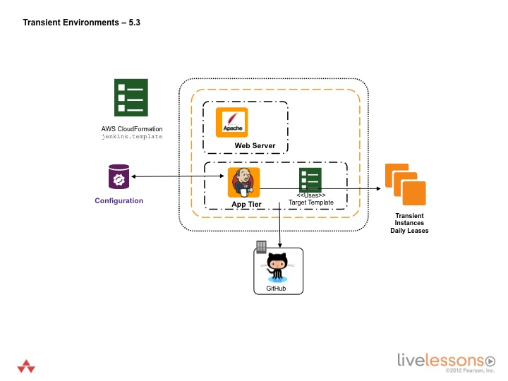

Implement the capability to have transient environments.
Transient Environments

Run the Transient Environment job
Go to http://IPADDRESS:8080/jenkins/job/Transient/. IPADDRESS is the IP Address assigned to you when you launched the Jenkins stack.
Select the Configure link for the Jenkins job. View the job configuration.
View the Transient Environment code and infrastructure.
From the AWSCLI instance, open up the devopsinthecloud/scripts/sqs_receive_message.rb file. You can also find the file by visiting https://github.com/stelligent/devopsinthecloud/blob/master/scripts/sqs_receive_message.rb
$ cd devopsinthecloud/scripts
$ sudo vim sqs_receive_message.rb
This script is configured in Jenkins to run every night.